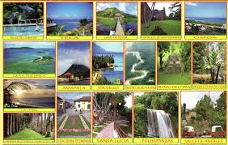

Se denomina destino turistico a una zona o area geografica ubicada en un lugar lejano y que es visitada por el turista, cuenta con limites de naturaleza fisica, de contexto politico y de percepcion por parte del mercado
La importancia del turismo en la sociedad El impacto del turismo en la sociedad no se puede medir en el corto plazo. No solamente hay impactos económicosññ sino también alteraciones en la calidad de vida. Algunos analistas internacionales del turismo sostienen que lo que puede ser beneficioso para un sector no necesariamente lo es para otro. Por ejemplo la industria hotelera o de restaurantes se benefician con el turismo, pero los residentes del lugar pueden ser víctimas de aglomeraciones de visitantes, contaminación, ruidos y en determinados casos hasta cambios en la forma de vivir, sobre todo cuando la zona no está lo sufientemente preparada. Por supuesto que este es un aspecto subjetivo.
Se defien como aquel que se practica en los lugares donde hay grandes aglomeracioneshumanas que ocupan un lugar estrategico en los servicios, en la produccion de conocimientos, en la cultura, en la innovacion que han tenido o tienen un importante peso politico y que juega un papel clave como nodo global. El turismo urbano es el resultado de los cambios en el comportamiento de las personas que lograron transformar las ciudades en centros culturales, lugares de esparcimiento, donde se puede ir de compras o para participar en diversos eventos . En el turismo hay un cambio hacia vacaciones culturales más activas.Según la OMT, el turismo urbano es “un tipo de actividad turística que tiene lugar en un espacio urbano con sus atributos inherentes caracterizados por una economía no agrícola basada en la administración, las manufacturas, el comercio y los servicios y por constituir nodos de transporte.
El turismo rural es un tipo de actividad turostica en el que la experiencia del visitante está relacionada con un amplio espectro de productos vinculados por lo general con las actividades de naturaleza, la agricultura, las formas de vida y las culturas rurales, la pesca con caña y la visita a lugares de interes.
turismo rural genera un conjunto de relaciones humanas resultantes de la visita de turistas a comunidades campesinas, aprovechando y disfrutando el ambiente, los valores naturales, culturales y socio-productivos. La incorporacion de la actividad turistica al sector rural ha despertado gran interes porque atiende una demanda en crecimiento, ocupa factores ociosos (mano de obra y capital) y evita el exodo del campo, incorporando a la mujer y a los jovenes como protagonistas
Aunque algunos desarrollos turísticos y agrarios pueden recibir subsidios y apoyos estatales, es en general una actividad economica que se autofinancia.
Desde el punto de vista empresarial,tanto estrategico como organizativo, el perimetro del destino los constituyen las relaciones que edifica entre el conjunto de unidades productivas que participan en actividades turisticas.
Por Otro lado Balague y Brualla (2001) consideran el destino turistico como la formalizacion de aquellos nuevos espacios geofisicos de interes o de aquellos otros que quieren plantearse una reconsideracion de su valoracion hacia parametros turisticos posibles para la potenciacion de sus estructuras actuales.
Con el paso del tiempo,la mayoria de los autores han adoptado una definicion diferente que parte de una orientacion especial pero se centra en una orientacion espacialpero se centra en una orientacion hacia el consumidor o turista.
El sector turismo aporta mas de un 8% al Producto Interno Brut(PIB)de Honduras y genera empleo para mas de 200,000 familias,segun la Camara Nacional de Turismo en Honduras(Canaturh),sin embargo la brutal crisis provocado por la pandemia del COVID-19
en el mundo a provocado, segun los expertos, la mayor crisis de la historia en este
rubro.
El sector turístico en Honduras atrae cada año alrededor de 900,000 turistas, los cuales generan aproximadamente 700 millones de dólares en divisas al año dejando significativas ganancias al país y generando importante cantidad de empleos.
Honduras tiene muchos destinos turísticos que llama la atención de varios turistas por su abundante y variada belleza natural que se manifiesta en su gente, en sus playas de arena blanca y obscura, arrecifes de coral, flora y fauna silvestre espectacular de admirar así como su gran belleza e historia arqueológica; además de su cultura expresada en las costumbres e idiosincrasia de sus habitantes así como en su deliciosa gastronomía típica del país, tal como la 'baleada' entre otras comidas autóctonas hondureñas. En 2019 Honduras recibió 2.8 millones de turistas extranjeros, la mitad de esos turistas son cruceristas.